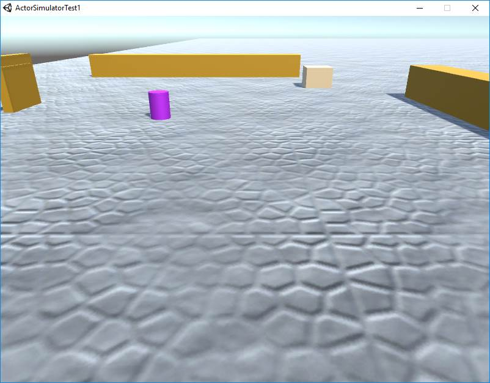
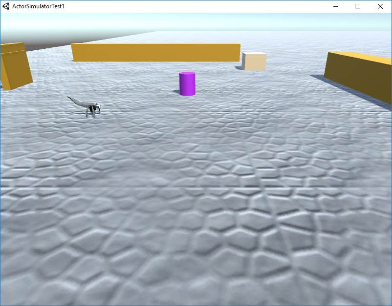

Real robots
A real robot can be conceived as:- an 'intelligent', autonomous device, programmed to execute useful tasks
- an 'executor of commands' emitted (as messages and/or events) by a remote 'mind'
- a mix of the previous two cases
Virtual robots
In order to acquire as soon as possible fedbacks from the customers, the program running on a real-robot should be developed and tested with reference to a mock-robot working in a simulated environment.The Unity game engine provides a powerful support to create and use such simulated environments.
A virtual-robot can be introduced as an image of a real robot, projected into a virtual Unity scene. Thus, the main task of a virtual robot is to show within the virtual environment the behaviour of a real-robot, expressed by the same software that will run on that concrete robot.
Most of the work has been done here by Federico Ruggeri, who has provided a first form of interoperability between the Unity and the QActor systems.
Technology indepenedent Robots
Thus, a first goal is to build software able to work with reference two different types of robots:- the virtual-robot (during the software development phase)
- the real-robot (during the product deployment phase)
QActors and Unity
To facilitate the achievement of the goal of the previous section, a QActor has been extended by proving the following operations:public void workWithUnity( ){ initUnityConnection("127.0.0.1"); createSimulatedActor(); }initUnityConnection( String ipaddr )
This operations requires that a Unity scene is running (on the localhost 127.0.0.1). An exemple of a scene is introduced in section Uniy scenespublic void createSimulatedActor( String prefabs )
This operation sends (via a TCP connection) a command (in QActor format) to create (in prefixed point of the scene) a virtual robot (named at the moment "robotfacade")-
public void moveVirtualActor(String direction, float speed, float duration, float angle)
This operation 'moves' the virtual-robot in the scene: For example:moveVirtualActor("S", 30, 1, 0 )
Plan init normal
actorOp workWithUnity("127.0.0.1") ;
actorOp moveVirtualActor( "W", 30, 1, 0 )
Virtual robots as sensor-data generators
In the current implementation, the virtual-robot is equipped (in fornt) with a sonar that can detect obstacles. In this case, it emits a QActor event of the form:sonarDetect : sonarDetect(X)Thsi event is sent (via the TCP connection) from Unity to the QActor system, that handles such an Unity-event as a conventional QActor event.
In this way the robot-program can perceive and handle events raised from a virtual world.
Uniy scenes
A prefixed Unity enviroment is provided for testing purposed by the file virtualRobot.zip (60Mb) that provides the following scene (without and with a robot in it)|  |  |
The relationship between real and virtual robots
The usage of a virtual robot (in the context of some Unity scene that simulates real-world aspects, like gravity, conflicts, etc) is mainly useful during the requirement analysis phase and during software development, in order to test as soon as possible the logical behavior of the system, by using an 'advanced mock' robot.When the system is deployed, a question arises:
If the asnwer is positivie, we can reproduce the real-robot behaviour in the virtual scene. The drawback is of course the introduction of some overhead in the behaviour, more communications over the netwroks and in new possible sources of errors.
On the other side, we can merge the real world with some virtual reality and create new type of applications.
The real robot as a command executor
Instead of loading the robot control program on a real-robot, we can include the robot control logic within a separate actor that works like a remote 'mind'. Such a 'robot mind' can be tested by using a standalone 'advanced mock' working within some Unity virtual scene.Moreover, we can avoid any dependency of a real robot form the virtual scene, by giving to the 'robot mind' the task to update the virtual scene (in the same node as the 'robot mind' itself). In this way, a real robot (running for example over a RaspberryPi) does not have the responsibility to update the virtual scene, while being 'sensible' to events coming from it.
To check
- SocketExecption: host sconosciuto
- PrologError: permission UnityActorSimulator
- Insert a logo in the scene
Experiments
- move('W',10,2,0) : obstacle detected and then going back
- move('W',30,2,0) : obstacle detected and moved and then going back